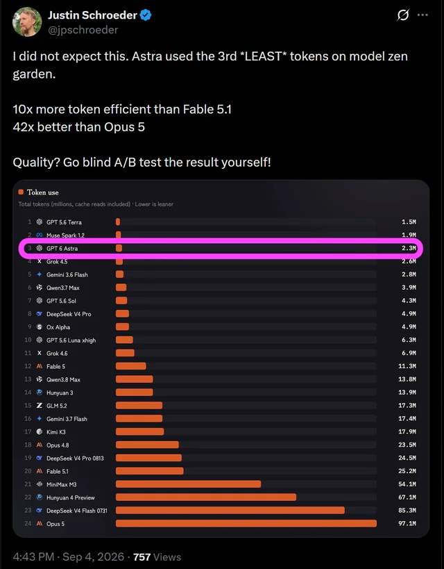
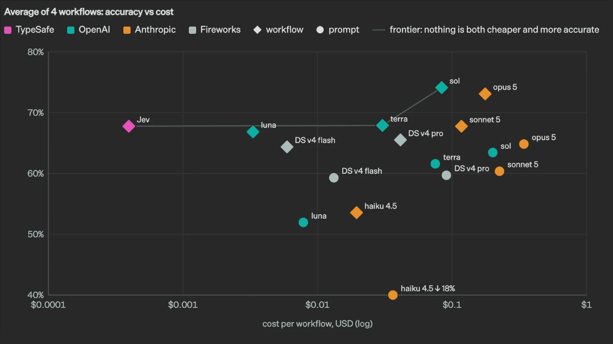
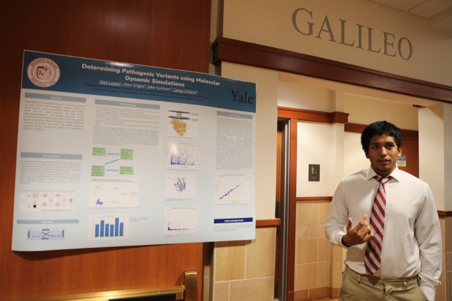
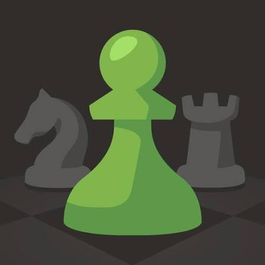
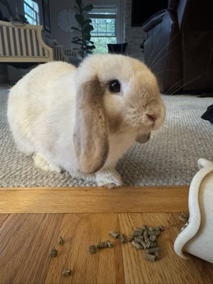

Expandya
Software Engineering Intern
June 2026 – September 2026, Westport, CT
projects
XP: experience
thing I like to do w/ my free time:
links
A visual way to see what you can build next with an agent
August 2026. Python 3.13, FastAPI, Google ADK, MCP SDK, Textual, SQLite, Cytoscape.js. Apache-2.0.
I believe that in the near future, whether through new models, better harnesses, or a shift off the LLM frame entirely (Jev, recently), the limit on building software won't be tokens or cost. The limiting factor will be the human intervention and drive it takes to actually get the software out. I know this sounds a little wild. The conversation is still mostly "who has the better model?" and "what's the best harness?" For most applications, though, I think the current models are already completely capable of debugging and fixing the work.
Ok, but not to ramble on too long, that idea is what drove me to build Graphene. No matter how many tokens you have, if you don't say which direction the application should go, the agent has to infer most of it. Graphene tries to bridge that connection between you and the agent. So, not claiming it magically saves 397% of your tokens but (ideally) it should help guide you and the agent toward that perfect idolized application you actually had in mind from the start.


Astra came in about 10× leaner than Fable 5.1 and 42× leaner than Opus 5. Jev lands in a similar accuracy band at a cost that barely shows up. Tokens and dollars are already getting cheap. The part that still takes a person is knowing where the work should go.
Software Engineering Intern
June 2026 – September 2026, Westport, CT
Teaching Assistant
September 2025 – Present, Boston, MA
Computational Biology Research Assistant
June – September 2023 and 2024, New Haven, CT

Undergraduate Ambassador
September 2025 – Present, Boston, MA
This week
/ 67 mi
Honestly the one thing I look foward to the most in my day, which would shock me couple years back. It's really the one time of day where I can just disconnect myself. I still sometimes get butterflies when I'm trying to get a new PR and I really enjoy that feeling of pushing myself. I really see no better way to spend my afternoon than to go for a run on a sunny day. Hopefully gonna qualify for Boston 2028!!!
This week · 12.3 mi so far · 2 runs
Treadmill
Ran on the treadmill.
Latest run, drawn as a route on the canvas: Sep 16, 6.03 miles at 7:45 per mile, 115 feet of climbing, Boston, MA.
I picked up golf recently and I've really been loving it; it's one of those sports that really, really humbles you every single time you step on the course, but that one perfect shot keeps pulling you right back out there.
7 years in playing chess and I still blunder every other move, but add me! Always down to get a quick game in.

Chief Code Reviewer.
